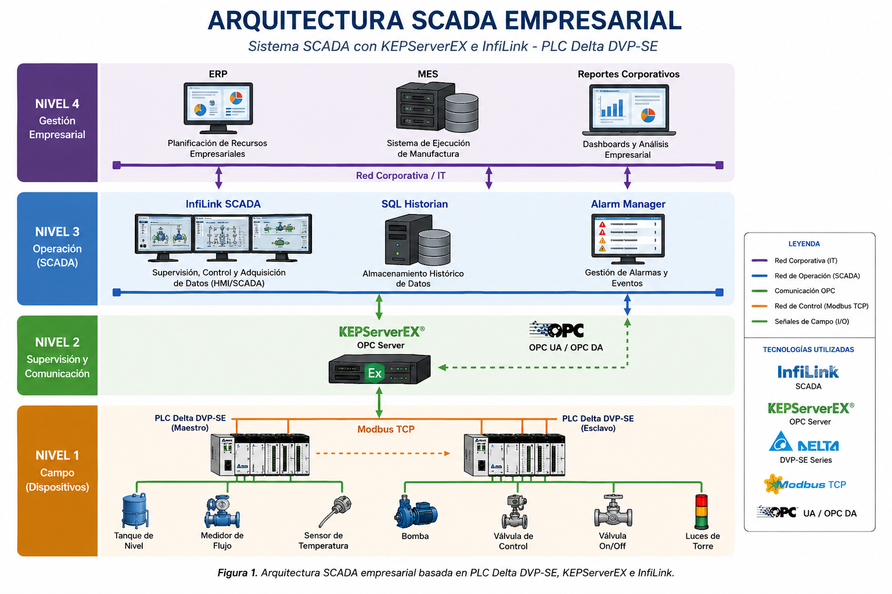
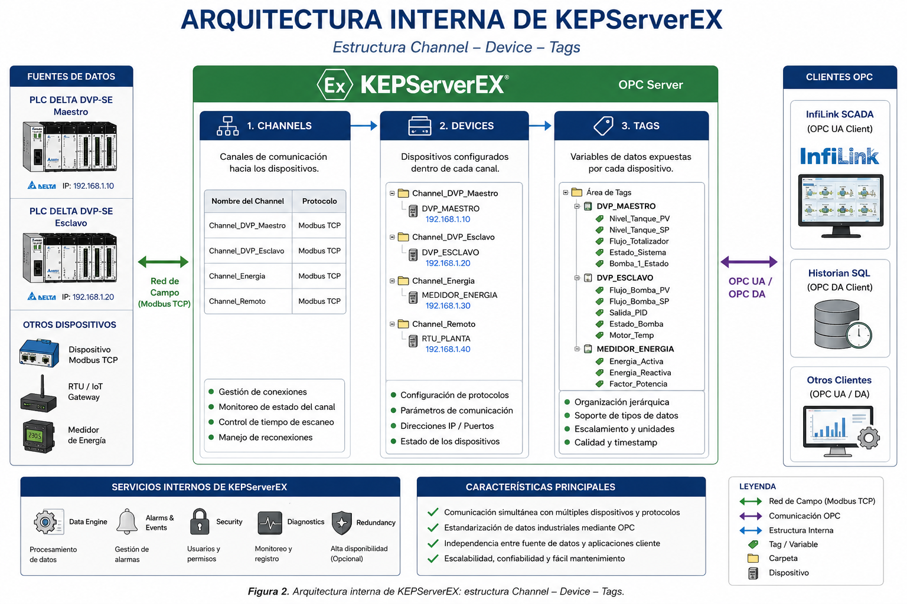
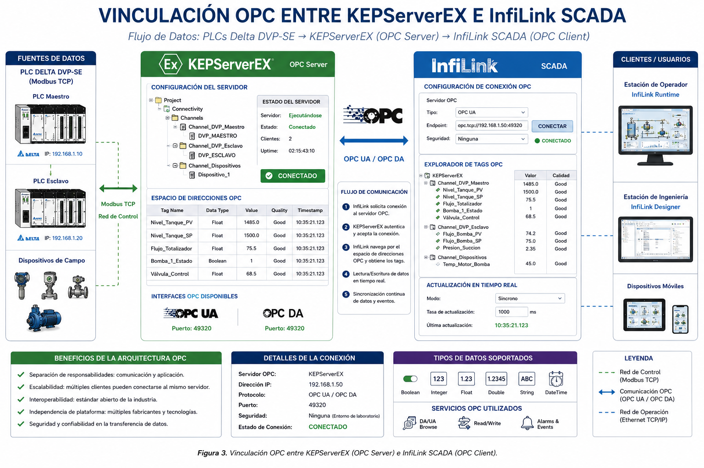
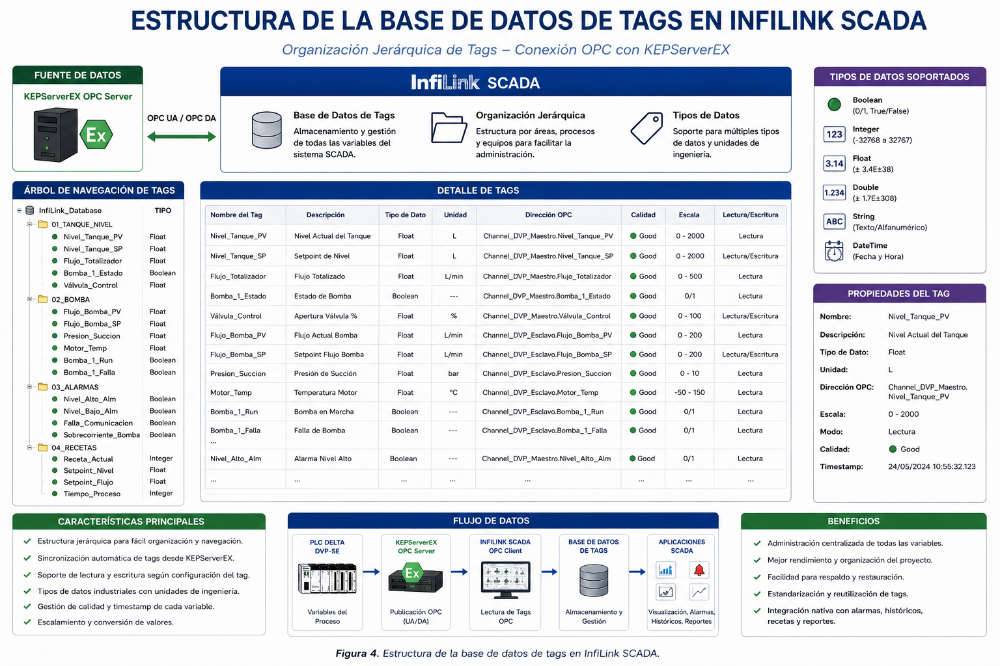
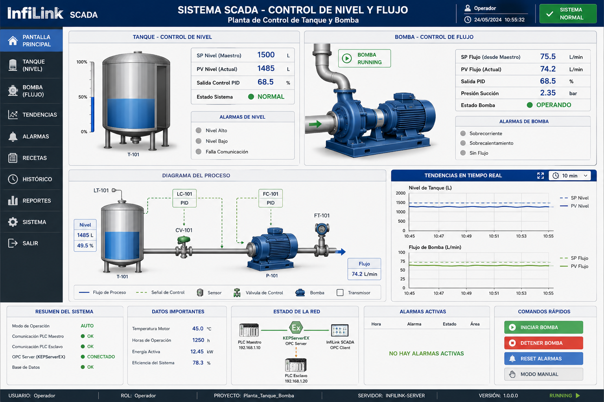

🏭 Laboratorio 6: Sistema SCADA con KEPServerEX e InfiLink
Control y Monitoreo de Proceso Industrial con PLC Delta DVP-SE
⏱️ Duración estimada: 8 horas académicas (2 sesiones) 👥 Modalidad: Trabajo en parejas 📚 Nivel: Avanzado - Sistemas de Supervisión y Control Plataforma: KEPServerEX (OPC Server) + InfiLink SCADA
📋 Criterios de Evaluación que se Desarrollan:
3.1.1 Describe características y arquitectura de plataformas SCADA.
3.1.2 Programa script para control y monitoreo de un proceso industrial.
3.1.3 Establece comunicación de plataforma SCADA con software y hardware tipo PLC.
3.1.4 Realiza puesta en marcha para alcanzar la operación del sistema SCADA.
🎯 Objetivos de la Práctica
Comprender la arquitectura SCADA con separación de capas: OPC Server (KEPServerEX) + HMI/SCADA (InfiLink).
Instalar y configurar KEPServerEX como servidor OPC UA/DA para conectividad con PLCs Delta.
Configurar driver Modbus TCP en KEPServerEX para comunicación con PLCs Delta DVP-SE.
Instalar y configurar InfiLink como plataforma SCADA cliente OPC.
Configurar conexión OPC en InfiLink para lectura/escritura de tags desde KEPServerEX.
Diseñar pantallas de supervisión con InfiLink Designer (animaciones, tendencias, alarmas).
Programar scripts en InfiLink para lógica de control, cálculo de KPIs y automatización.
Configurar sistema de alarmas con InfiLink Alarm Manager y notificaciones.
Implementar historización de datos con InfiLink Historian o base de datos externa.
Crear recetas de producción usando funcionalidad de recetas de InfiLink.
Realizar puesta en marcha completa del sistema SCADA integrado: KEPServerEX → InfiLink → PLCs.
Validar funcionalidad mediante pruebas de comunicación OPC, operación y recuperación de fallos.
Documentar arquitectura del sistema incluyendo configuración de KEPServerEX e InfiLink.
Aplicar normas de seguridad industrial y ciberseguridad en el sistema SCADA.
📖 Fundamento Teórico
🏗️ Arquitectura SCADA con KEPServerEX e InfiLink
Esta arquitectura separa la conectividad de dispositivos (KEPServerEX) de la visualización y control (InfiLink), siguiendo el estándar OPC (OLE for Process Control):
📊 Componentes Principales

Capas de la Arquitectura:
1. Nivel Campo: PLCs Delta con Modbus TCP
2. Nivel Conectividad: KEPServerEX (OPC Server)
3. Nivel SCADA: InfiLink (OPC Client) + Historian + Alarmas
4. Nivel Empresarial: ERP, MES, SQL Server
Flujo de Datos:
PLC → Modbus TCP → KEPServerEX → OPC → InfiLink → Operador
Conectividad: Soporta 150+ drivers de dispositivos
OPC UA/DA: Soporta OPC Classic (DA) y OPC UA moderno
Escalabilidad: Desde 1 hasta miles de tags
Diagnóstico: Herramientas avanzadas de monitoreo y troubleshooting
Try & Buy: Versión de prueba gratuita por 30 días
💡 ¿Qué es InfiLink?
HMI/SCADA: Plataforma de supervisión y control industrial
Designer: Entorno de desarrollo de pantallas gráficas
Runtime: Motor de ejecución de aplicaciones SCADA
Tag Database: Base de datos de variables del proceso
Scripting: Lenguaje de scripting para lógica de control
Alarm Manager: Sistema completo de alarmas y eventos
Historian: Almacenamiento y visualización de datos históricos
OPC Client: Conectividad nativa con servidores OPC (KEPServerEX)
Web Access: Visualización vía navegador web
🔌 Protocolo OPC (OLE for Process Control)
OPC es el estándar industrial para interoperabilidad entre dispositivos de automatización y software SCADA:
📡 Tipos de OPC
Tipo OPC
Descripción
Uso en esta práctica
OPC DA (Data Access)
Acceso a datos en tiempo real (COM/DCOM)
Comunicación KEPServerEX → InfiLink
OPC UA (Unified Architecture)
Arquitectura unificada (multiplataforma, seguro)
Conectividad moderna, IoT
OPC HDA (Historical Data Access)
Acceso a datos históricos
Consultas a InfiLink Historian
OPC A&E (Alarms & Events)
Gestión de alarmas y eventos
Sistema de alarmas InfiLink
🗺️ Configuración de KEPServerEX

Configuración del Channel:
Driver: Modbus TCP
Network Setting: Ethernet
Polling: 1000 ms
Configuración del Device:
ID: 1 (para Device1), 2 (para Device2)
Model: Modbus TCP/IP
IP Address: 192.168.1.10 / 192.168.1.20
Port: 502
📝 InfiLink Tag Database
InfiLink usa una base de datos de tags que se vinculan a tags OPC de KEPServerEX:

InfiLink Scripting
InfiLink tiene su propio lenguaje de scripting que se ejecuta en diferentes momentos:
Tipo de Script
Cuándo se ejecuta
Uso
On Startup
Cuando inicia la aplicación
Inicialización de variables
Cyclic/Timer
Cada X segundos (configurable)
Cálculos periódicos, KPIs
On Shutdown
Cuando cierra la aplicación
Limpieza, guardar estado
Button/Event
Cuando se presiona un botón
Control manual, comandos
Alarm/Condition
Cuando se cumple una condición
Alarmas, enclavamientos
📝 Ejemplo de Script en InfiLink

⚠️ Consideraciones de Seguridad
Riesgo
Medida de Prevención
Acceso no autorizado a KEPServerEX
Autenticación de usuarios, firewall
Manipulación de tags OPC
Permisos de escritura/lectura, validación de rangos
Fallo de comunicación DCOM
Configuración correcta de DCOM, usuarios con permisos
Pérdida de datos históricos
Backups automáticos de InfiLink Historian
Ciberataques
Red industrial aislada, actualizaciones de seguridad
⚠️ NORMAS DE SEGURIDAD APLICABLES:
IEC 62443: Seguridad de sistemas de automatización y control industrial
OPC Foundation: Estándares de seguridad OPC UA
NIST SP 800-82: Guía de seguridad para sistemas de control industrial
NOM-029-STPS: Mantenimiento de instalaciones eléctricas (México)
🔧 Materiales y Equipos
Cantidad
Elemento
Especificaciones
2
PLC Delta DVP-SE
Con puerto Ethernet (10/100Base-TX)
1
Switch Ethernet
5 puertos, 10/100 Mbps
1
Servidor SCADA
PC con Windows 10/11, 8GB RAM, 50GB disco
1
KEPServerEX
Versión 6.x (30 días prueba o licencia)
1
InfiLink SCADA
Versión de prueba o licencia educativa
1
SQL Server Express
Para historización (opcional)
1
Bomba centrífuga DC
12V/24V DC con control de velocidad
1
Sensor de nivel
Ultrasónico o capacitivo (0-10V o 4-20mA)
1
Sensor de flujo
Turbina o electromagnético (pulsos o 4-20mA)
2
Tanques de agua
Capacidad 10-20L
4
Cable Ethernet
CAT5e/CAT6, RJ45
1
Software ISPSoft
Programación de PLCs Delta
1
Fuente de poder
24V DC, 5A
1
EPP
Gafas de seguridad, guantes
📋 Desarrollo de la Práctica
1 Instalación y Configuración de KEPServerEX
Objetivo: Instalar KEPServerEX y configurar canal Modbus TCP para PLCs Delta.
💻 Procedimiento de Instalación
Descargar KEPServerEX:
Ir a https://www.kepware.com/products/kepserverex/
Solicitar versión de prueba (30 días)
Descargar instalador (requiere registro)
Instalar KEPServerEX:
Ejecutar instalador como administrador
Aceptar términos de licencia
Seleccionar componentes:
✓ KEPServerEX Core
✓ Modbus TCP/IP Driver
✓ OPC Classic (DA, HDA, A&E)
✓ OPC UA Server
✓ Administration Tool
Completar instalación y reiniciar
Abrir Configuration Application:
Iniciar KEPServerEX Configuration
Aceptar licencia
Activar versión de prueba o ingresar licencia
Crear Channel Modbus TCP:
Clic derecho en Project → New Channel
Nombre: Channel1
Driver: Modbus TCP/IP
Descripción: PLCs Delta DVP-SE
Configurar:
Polling Interval: 1000 ms
Network Setting: Ethernet
Crear Device para PLC Maestro:
Clic derecho en Channel1 → New Device
Nombre: PLC_Delta_1
Model: Modbus TCP/IP
ID: 1
Configurar:
IP Address: 192.168.1.10
Port: 502
Timeout: 3000 ms
Retries: 3
Crear Device para PLC Esclavo:
Repetir proceso con:
Nombre: PLC_Delta_2
ID: 2
IP Address: 192.168.1.20
Crear Tags en KEPServerEX:
En PLC_Delta_1, crear tags:
Tag Name
Address
Data Type
Description
Nivel
40001
Float
Nivel del tanque (%)
Flujo
40002
Float
Flujo de bomba (L/min)
Temperatura
40003
Float
Temperatura motor (°C)
ComandoArranque
00001
Boolean
Comando de arranque
EstadoBomba
00002
Boolean
Estado de bomba
En PLC_Delta_2, crear tags:
Tag Name
Address
Data Type
Description
SetpointNivel
40001
Float
Setpoint de nivel
SetpointFlujo
40002
Float
Setpoint de flujo
Verificar comunicación:
En KEPServerEX, ir a Diagnostics
Verificar que Devices muestren:
Estado: Connected
Quality: Good
Ver que los tags muestren valores actualizados
Configurar OPC Server:
KEPServerEX automáticamente expone tags vía OPC DA y OPC UA
Verificar que OPC Server esté corriendo:
Servicio: KEPServerEX v6
Estado: Running
💡 Diagnóstico en KEPServerEX:
Quick Client: Herramienta para ver tags OPC en tiempo real
Traffic Monitor: Ver tráfico Modbus TCP
Error Codes: Consultar códigos de error Modbus
Event Log: Registro de eventos y errores
2 Instalación y Configuración de InfiLink
Objetivo: Instalar InfiLink y configurar conexión OPC a KEPServerEX.
🔧 Procedimiento de Instalación
Descargar InfiLink:
Ir al sitio web del fabricante de InfiLink
Solicitar versión de prueba o educativa
Descargar instalador
Instalar InfiLink:
Ejecutar instalador como administrador
Aceptar términos de licencia
Seleccionar componentes:
✓ InfiLink Designer (desarrollo)
✓ InfiLink Runtime (ejecución)
✓ OPC Client
✓ Historian
✓ Alarm Manager
✓ Web Server (opcional)
Completar instalación y reiniciar
Abrir InfiLink Designer:
Iniciar InfiLink Designer
Crear nuevo proyecto:
Nombre: ProcesoIndustrial
Descripción: Control de nivel y flujo
Ruta: C:\InfiLink\Projects\ProcesoIndustrial
Configurar conexión OPC:
En Designer, ir a Project → OPC Configuration
Clic en Add OPC Server
Seleccionar:
OPC Server: Kepware.KEPServerEX.6
Node: localhost (o IP del servidor)
Update Rate: 1000 ms
Test connection - debe mostrar "Connected"
Configurar Tag Database:
En Designer, ir a Tags → Tag Database
Crear tags vinculados a OPC:
TagName
OPC Item Path
Data Type
Tanque_Nivel
Channel1.Device1.Nivel
Float
Tanque_Flujo
Channel1.Device1.Flujo
Float
Tanque_Setpoint
Channel1.Device2.SetpointNivel
Float
Bomba_Comando
Channel1.Device1.ComandoArranque
Boolean
Bomba_Estado
Channel1.Device1.EstadoBomba
Boolean
Verificar tags OPC:
En Tag Database, verificar que todos los tags muestren:
Quality: Good
Value: Valor actualizado
Si hay error, revisar:
KEPServerEX está corriendo
Configuración OPC correcta
PLCs están accesibles
Configurar proyecto:
Project → Properties
Startup Screen: MainScreen
Security: Enable user authentication
Alarm Settings: Enable alarm system
💡 InfiLink Designer vs Runtime:
Designer: Entorno de desarrollo (diseño de pantallas, configuración)
Runtime: Motor de ejecución (operación normal)
Para probar: File → Run Project
3 Diseño de Pantallas con InfiLink Designer
Objetivo: Crear interfaces de supervisión usando herramientas gráficas de InfiLink.
🎨 Creación de Pantalla Principal
Crear nueva pantalla:
En Designer, File → New Screen
Nombre: MainScreen
Tamaño: 1024 x 768
Background color: Light Gray
Diseñar layout:
Usar Rectangle para crear paneles
Agregar Label para títulos y etiquetas
Organizar en secciones:
Header: Título, logo, fecha/hora
Panel izquierdo: Navegación
Panel central: Visualización del proceso
Panel derecho: Alarmas, KPIs
Footer: Botones de control
Agregar componentes animados:
Componente
Herramienta
Propiedad Animada
Tag
Tanque con nivel
Vertical Bar
Fill Level
Tanque_Nivel
Bomba
Symbol (pump)
Visible / Color
Bomba_Estado
Valor numérico
Numeric Display
Value
Tanque_Nivel
Input de setpoint
Numeric Input
Value
Tanque_Setpoint
Botón ARRANQUE
Button
Script
Bomba_Comando = 1
Botón PARO
Button
Script
Bomba_Comando = 0
LED de alarma
Circle
Color
Tanque_Nivel > 90
Configurar animaciones:
Seleccionar objeto (ej. Vertical Bar)
Clic derecho → Properties → Animation
Seleccionar tipo: Fill
Vincular tag: Tanque_Nivel
Configurar rango:
Min: 0
Max: 100
Repetir para cada objeto animado
Crear botones de navegación:
Agregar botones:
Inicio: MainScreen
Tendencias: TrendsScreen
Alarmas: AlarmsScreen
Recetas: RecipesScreen
Script de botón:
OpenScreen("TrendsScreen");
Agregar fecha y hora:
Usar Label con función:
DateTime.Now.ToString("yyyy-MM-dd HH:mm:ss")
Configurar actualización: Timer cada 1000 ms
Guardar pantalla:
File → Save
Build → Build Project
📊 Ejemplo de Pantalla Principal

4 Programación de Scripts en InfiLink
Objetivo: Desarrollar scripts para control, cálculo de KPIs y automatización.
📝 Script 1: Cálculo de KPIs (Timer - cada 60 segundos)
Script: CalculoKPIs
━━━━━━━━━━━━━━━━━━━
Tipo: Timer Script
Intervalo: 60000 ms (60 segundos)
// Calcular producción total
IF Bomba_Estado = 1 THEN
ProduccionAcumulada = ProduccionAcumulada + (Tanque_Flujo / 60);
END_IF;
// Calcular eficiencia
IF ProduccionObjetivo > 0 THEN
Eficiencia = (ProduccionAcumulada / ProduccionObjetivo) * 100;
ELSE
Eficiencia = 0;
END_IF;
// Calcular tiempo de operación
IF Bomba_Estado = 1 THEN
TiempoOperacion = TiempoOperacion + 1; // en minutos
END_IF;
// Verificar alarmas de eficiencia
IF Eficiencia < 80 THEN
MESSAGE = "⚠️ Eficiencia baja: " + Eficiencia + "%";
TRIGGER_ALARM("EficienciaBaja");
END_IF;
📝 Script 2: Secuencia de Arranque (Button Script)
Script: ArranqueProceso
━━━━━━━━━━━━━━━━━━━━━━
Tipo: Button Script (botón ARRANQUE)
// Verificar condiciones iniciales
IF Tanque_Nivel < 20 THEN
MESSAGE = "⚠️ Nivel de tanque insuficiente";
RETURN;
END_IF;
IF EmergenciaActiva = 1 THEN
MESSAGE = "⚠️ Emergencia activa. No se puede arrancar";
RETURN;
END_IF;
// Confirmación del operador
IF Confirmar("¿Desea iniciar el proceso?\nNivel actual: " + Tanque_Nivel) THEN
// Paso 1: Abrir válvula
Tanque_ValvulaEntrada = 1;
MESSAGE = "✅ Válvula de entrada abierta";
// Paso 2: Esperar 3 segundos
WAIT(3000);
// Paso 3: Activar bomba
Bomba_Comando = 1;
MESSAGE = "✅ Bomba activada";
// Registrar evento
MESSAGE = "Proceso iniciado por " + CurrentUser;
LOG_EVENT("Proceso iniciado", CurrentUser);
ELSE
MESSAGE = "Arranque cancelado";
END_IF;
📝 Script 3: Control de Alarmas (Condition Script)
Script: ControlAlarmas
━━━━━━━━━━━━━━━━━━━━━
Tipo: Condition Script
// Alarma de nivel alto
IF Tanque_Nivel > 90 THEN
AlarmaNivelAlto = 1;
MESSAGE = "🔴 NIVEL ALTO: " + Tanque_Nivel + "%";
TRIGGER_ALARM("NivelAlto");
// Acción automática: cerrar válvula
Tanque_ValvulaEntrada = 0;
END_IF;
// Alarma de nivel bajo
IF Tanque_Nivel < 20 THEN
AlarmaNivelBajo = 1;
MESSAGE = "🟡 NIVEL BAJO: " + Tanque_Nivel + "%";
TRIGGER_ALARM("NivelBajo");
// Acción automática: parar bomba
Bomba_Comando = 0;
END_IF;
// Alarma de temperatura alta
IF Motor_Temperatura > 80 THEN
AlarmaTempAlta = 1;
MESSAGE = "🔴 TEMPERATURA ALTA: " + Motor_Temperatura + "°C";
TRIGGER_ALARM("TempAlta");
// Parar bomba por seguridad
Bomba_Comando = 0;
END_IF;
// Reset de alarmas cuando vuelven a normal
IF Tanque_Nivel <= 90 AND Tanque_Nivel >= 85 THEN
AlarmaNivelAlto = 0;
END_IF;
IF Tanque_Nivel >= 20 AND Tanque_Nivel <= 25 THEN
AlarmaNivelBajo = 0;
END_IF;
📝 Script 4: Parada de Emergencia (Button Script)
Script: ParadaEmergencia
━━━━━━━━━━━━━━━━━━━━━━━
Tipo: Button Script (botón EMERGENCIA)
// Confirmación de emergencia
IF Confirmar("⚠️ PARADA DE EMERGENCIA\n¿Está seguro?") THEN
// Parar todos los equipos
Bomba_Comando = 0;
Tanque_ValvulaEntrada = 0;
Tanque_ValvulaSalida = 0;
// Activar alarma de emergencia
EmergenciaActiva = 1;
TRIGGER_ALARM("ParadaEmergencia");
// Mensaje crítico
MESSAGE = "🔴 PARADA DE EMERGENCIA ACTIVADA";
// Registrar en log
LOG_EVENT("Emergencia activada por " + CurrentUser + " a las " + DateTime.Now);
// Notificar a supervisor
SEND_NOTIFICATION("Supervisor", "Emergencia activada");
ELSE
MESSAGE = "Emergencia cancelada";
END_IF;
💡 Funciones Comunes en InfiLink Scripting:
OpenScreen("ScreenName"): Abrir pantalla
CloseScreen("ScreenName"): Cerrar pantalla
MESSAGE = "texto": Mostrar mensaje en barra de estado
Confirmar("texto"): Cuadro de confirmación (True/False)
Objetivo: Configurar almacenamiento de datos históricos en InfiLink.
💾 Configuración de InfiLink Historian
Configurar tags para historización:
En Tag Database, seleccionar tags críticos:
Tanque_Nivel
Tanque_Flujo
Motor_Temperatura
ProduccionAcumulada
Para cada tag, activar:
Historian: Enable
Deadband: 1.0 (no guardar si cambio < 1%)
Sample Period: 60 segundos
Storage: Database
Configurar base de datos:
InfiLink usa SQL Server o base de datos interna
Configurar conexión:
Server: localhost
Database: InfiLinkHistorian
Authentication: Windows o SQL
Crear pantalla de tendencias:
Crear nueva ventana TrendsScreen
Agregar componente Trend Chart:
Desde Toolbox → Trend
Configurar:
Pens: Tanque_Nivel, Tanque_Flujo
Time Range: Last 24 hours
Update Rate: 60 seconds
Y-Axis: Auto-scale
Script de reporte diario:
Script: ReporteDiario
━━━━━━━━━━━━━━━━━━━
Tipo: Timer Script (daily at 23:59)
// Calcular totales del día
ProduccionTotal = ProduccionAcumulada;
TiempoTotal = TiempoOperacion / 60; // convertir a horas
IF TiempoTotal > 0 THEN
PromedioFlujo = ProduccionTotal / TiempoTotal;
ELSE
PromedioFlujo = 0;
END_IF;
// Guardar en archivo de texto
FilePath = "C:\\Reportes\\Reporte_" + DateTime.Now.ToString("yyyy-MM-dd") + ".txt";
File.WriteAllText(FilePath,
"Reporte Diario - " + DateTime.Now.ToString("yyyy-MM-dd") + "\n" +
"Producción Total: " + ProduccionTotal + " L\n" +
"Tiempo Operación: " + TiempoTotal + " h\n" +
"Flujo Promedio: " + PromedioFlujo + " L/h\n" +
"Eficiencia: " + Eficiencia + "%\n"
);
MESSAGE = "Reporte generado: " + FilePath;
// Enviar por email
SEND_EMAIL("supervisor@empresa.com", "Reporte Diario",
"Adjunto reporte de producción del día");
7 Implementación de Recetas de Producción
Objetivo: Crear sistema de recetas de producción.
📋 Configuración de Recetas
Abrir Recipe Manager:
En Designer, Tools → Recipe Manager
Crear nueva receta: RecetaProduccion
Definir parámetros de receta:
Parameter Name
Data Type
Tag Vinculado
Description
SetpointNivel
Float
Tanque_Setpoint
Nivel objetivo (%)
SetpointFlujo
Float
Bomba_SetpointFlujo
Flujo objetivo (L/min)
TiempoCiclo
Integer
Proceso_TiempoCiclo
Tiempo de ciclo (min)
TemperaturaObj
Float
Motor_TempObjetivo
Temperatura objetivo (°C)
Crear recetas de ejemplo:
Recipe Name
SetpointNivel
SetpointFlujo
TiempoCiclo
Produccion_Estandar
85.0
75.0
60
Produccion_Rapida
90.0
100.0
40
Produccion_Economica
80.0
60.0
80
Crear pantalla de gestión de recetas:
Crear ventana RecipesScreen
Agregar componentes:
ComboBox: Lista de recetas disponibles
Button "Cargar": Cargar receta seleccionada
Button "Guardar": Guardar configuración actual
DataGrid: Mostrar parámetros de receta
Script para cargar receta:
Script: CargarReceta
━━━━━━━━━━━━━━━━━━
Tipo: Button Script
// Obtener receta seleccionada
RecetaSeleccionada = ComboBox_Recetas.SelectedItem;
IF RecetaSeleccionada IS NOT NULL THEN
// Cargar receta desde Recipe Manager
IF RecipeManager.LoadRecipe("RecetaProduccion", RecetaSeleccionada) THEN
MESSAGE = "✅ Receta cargada: " + RecetaSeleccionada;
LOG_EVENT("Receta cargada: " + RecetaSeleccionada, CurrentUser);
ELSE
MESSAGE = "❌ Error al cargar receta";
END_IF;
ELSE
MESSAGE = "Seleccione una receta";
END_IF;
Script para guardar receta:
Script: GuardarReceta
━━━━━━━━━━━━━━━━━━
Tipo: Button Script
// Solicitar nombre de receta
NombreReceta = InputBox("Ingrese nombre de la receta:", "Nueva Receta");
IF NombreReceta IS NOT NULL AND NombreReceta != "" THEN
// Guardar configuración actual como receta
IF RecipeManager.SaveRecipe("RecetaProduccion", NombreReceta) THEN
MESSAGE = "✅ Receta guardada: " + NombreReceta;
// Actualizar lista de recetas
ComboBox_Recetas.Refresh();
ELSE
MESSAGE = "❌ Error al guardar receta";
END_IF;
END_IF;
8 Puesta en Marcha del Sistema SCADA
Objetivo: Realizar la puesta en marcha completa del sistema.
🚀 Procedimiento de Puesta en Marcha
Verificaciones previas (CHECKLIST):
☐ Servidor SCADA energizado
☐ KEPServerEX instalado y corriendo
☐ InfiLink instalado
☐ PLCs Delta energizados y en modo RUN
☐ Cables Ethernet conectados
☐ Sensores calibrados
☐ EPP colocado
☐ Botón de emergencia funcional
Iniciar KEPServerEX:
Verificar servicio corriendo
Abrir Configuration Application
Verificar Devices conectados
Verificar tags con Quality: Good
Probar comunicación OPC:
Abrir OPC Quick Client (incluido con KEPServerEX)
Conectar a Kepware.KEPServerEX.6
Browse Channel1.PLC_Delta_1
Verificar que tags muestren valores
Iniciar InfiLink Designer:
Abrir proyecto ProcesoIndustrial
Verificar OPC configuration
Verificar tags en Tag Database
Todos deben mostrar Quality: Good
Probar pantallas:
Build → Build Project
Run Project (MainScreen)
Verificar que:
Tanque muestre nivel animado
Bomba muestre estado
Valores numéricos se actualicen
Botones respondan
Iniciar InfiLink Runtime:
En Designer, Project → Properties
Startup Screen: MainScreen
Run → Start Runtime
Verificar operación normal
Pruebas de operación:
Prueba
Procedimiento
Resultado Esperado
Lectura de sensores
Verificar valores en pantalla
Valores coherentes
Cambio de setpoint
Modificar desde InfiLink
Tag en KEPServerEX se actualiza
Control de bomba
Activar/parar desde InfiLink
Bomba responde
Alarmas
Simular nivel alto
Alarma se activa en Alarm Viewer
Tendencias
Ver gráfica de nivel
Datos se actualizan
Historización
Verificar base de datos
Datos almacenados
Recetas
Cargar receta
Setpoints se actualizan
Emergencia
Activar E-Stop
Sistema se detiene
Validar comunicación:
Desconectar cable Ethernet de PLC
Verificar que KEPServerEX muestre error
Verificar que InfiLink muestre Quality: Bad
Reconectar cable
Verificar recuperación automática
✅ Criterios de Éxito:
KEPServerEX: Devices conectados, tags con Quality: Good